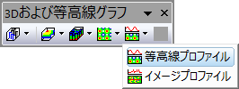

Contour-Profile
または、
行列/ワークシート/イメージウィンドウをアクティブにします。
メニューから「作図> 等高線：等高線プロファイル」を選択します。
3Dおよび等高線グラフツールバーの等高線プロファイルボタン をクリックします。 
profile_contour.otpu
(Originのプログラムフォルダにインストールされています。)
データのプロファイリングについての詳細は、このページを参照してください。